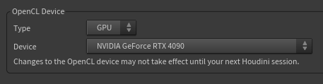
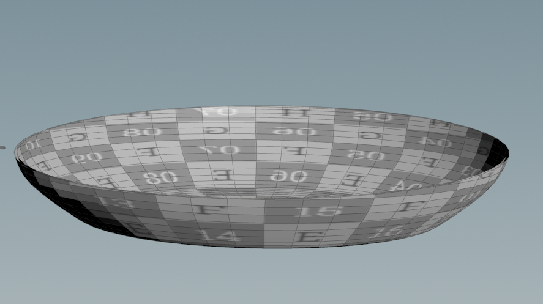
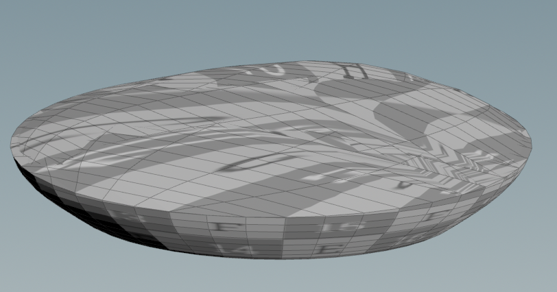
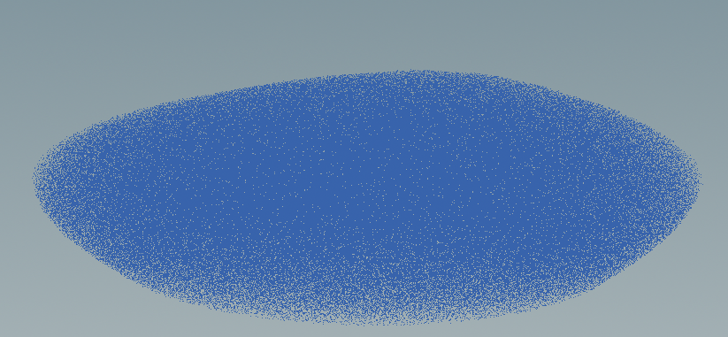
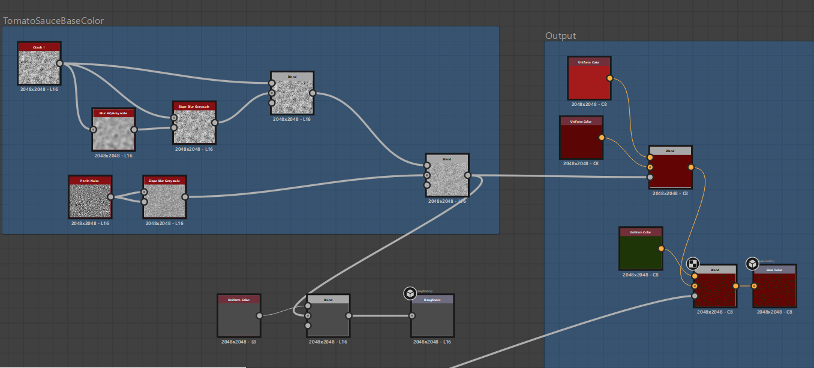
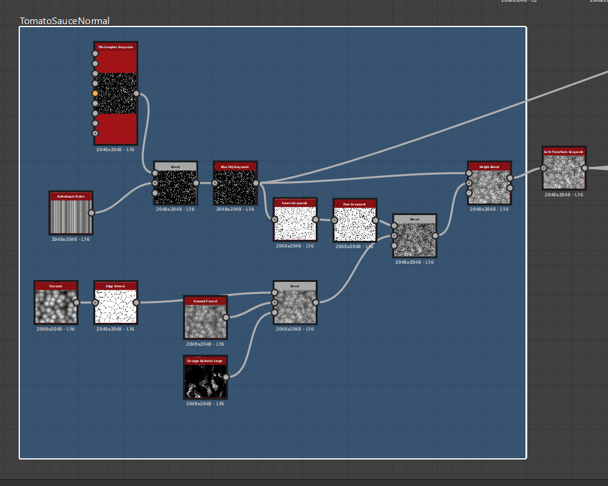
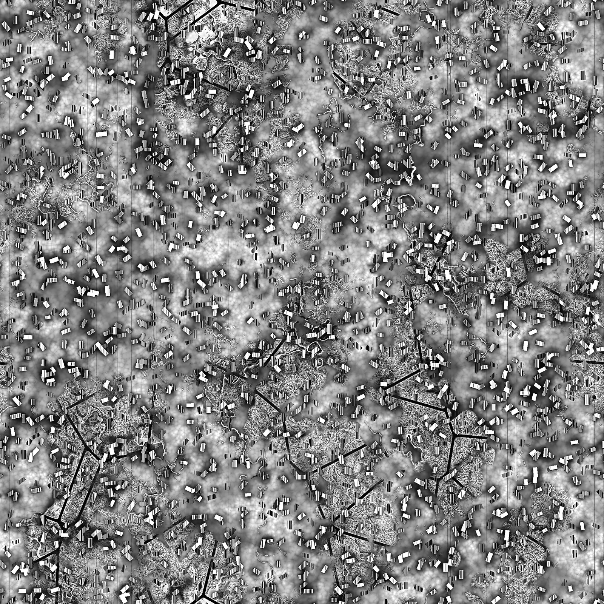
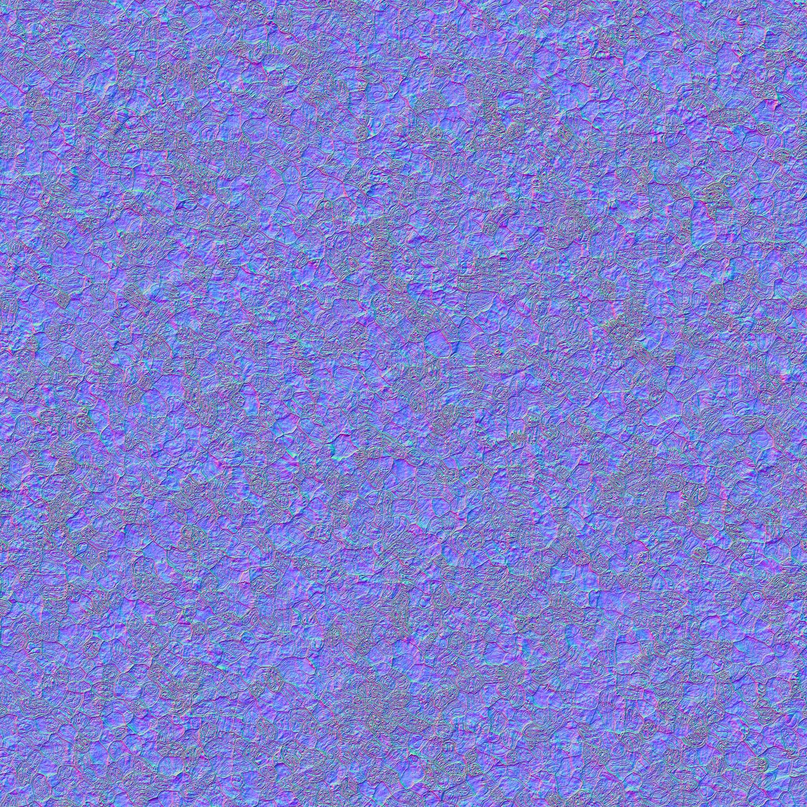

← 部落格 × VSFX728
待辦事項：


已完成的事：
下週計畫：
第 9 週
VSFX 728 － 第 9 週
大家好，這是我 VSFX 728 部落格的期末專案！
5 月 15 日
待辦事項：
1. 找出 File Cache 失敗的原因
2. 更換目前的發射源
3. 加入額外的發射源（番茄塊和表面的油）
4. 測試材質，重點在醬汁
最終測試（特效）
我對模擬不太滿意，因為參考影片中醬汁落下時更有塊狀感、更斷續，而我的感覺太平滑、太流動。所以下週的模擬我想加入更多番茄塊，讓它更接近參考。
FileCache 失敗
用 RTX 4090 無法穩定地做 file cache，所以我把 OpenGL 模式從 CPU 切換到 GPU。但速度很慢，模擬 500 格大約要 6 小時。

更換發射源
我從官方範例 MPMWaterGlass 得到靈感，更換了發射源。之前的設定需要更多時間讓球體落下並撞到鍋子，現在改成從鍋子裁切幾何體再用 PolyFill，節省了一些時間。



加入其他來源
我為番茄醬加了兩層。第一層是番茄塊，讓流體看起來更有塊狀感；我也注意到醬汁表面有一層薄薄的油。
番茄塊
我切下鍋子的一部分作為發射源，再建立一個球體代表番茄塊，複製到點上，並用 wrangle 節點讓番茄塊有不同的大小與方向。
為了替三個發射源指定不同的材質，我依照名稱把它們分開。
油
油層看起來太黏、太重，所以我打算降低它的密度並減少發射源，讓結果更真實。
測試材質（番茄醬）
我用 Substance Designer 製作程序化材質，也在表面加了蔥花。時間允許的話，我也想加入洋蔥，讓材質看起來更真實。
這是我學習製作材質時使用的教學。
這些是我用程序化方式產生的貼圖。（Base Color、Roughness、AO、Normal、Height）




這是我在 Houdini 中指定材質並測試的地方。目前看起來有點像塑膠，還需要想辦法提升真實感。